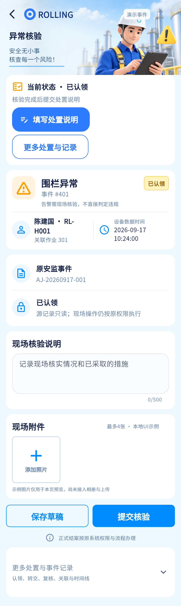

核验文本提交是复用handle，不是独立审核服务；附件与设计一样仍是本地示例，正式上传属于下一阶段。
相同 · 已有基础
异常摘要、不直接判违规、500字说明、草稿、核验提交、本地示例附件均已有。
不同 · UI与场景
当前额外置顶“下一步”操作卡，原始告警另成卡，更多记录折叠；设计更紧凑且保留四栏。
01 / 先看 UI
两图显示宽度统一；设计390px与当前360逻辑宽的画布不同。各图可独立滚动到底，点击“原图”放大。


使用既有组件截图；业务数据为示例。
02 / 逐项核对功能与小交互
入口：消息 → 普通事件；作业详情 → 相关事件 · 当前形态：子页面
| 编号 | 部位 | 设计要求 | 当前UI | 功能结论 | 下一步 |
|---|---|---|---|---|---|
| 25-01 | 摘要 | 连接中断提示+人员设备作业 | 当前随真实事件类型显示，可能是围栏异常 | 已有代码：截图事件不同不算功能缺失 | 用同类型样例复核UI |
| 25-02 | 状态 | 待核验、当前处理人 | 当前已有状态与下一步卡 | 部分：认领人可读名称仍需完善 | 统一平台状态与核验标签，保留原始告警 |
| 25-03 | 说明 | 多行核验说明0/500 | 当前已有计数和输入 | 已有代码：最大500，同步控制器草稿 | 验长文本、换行、键盘、返回 |
| 25-04 | 保存草稿 | 保存并恢复 | 当前本机保存 | 已有代码：SharedPreferences事件草稿，账户厂站事件隔离 | 明确“本机草稿”，验重启恢复及退出清理 |
| 25-05 | 提交核验 | 提交文本结果 | 当前执行EventCommand.handle | 已有代码：带version，需本人认领且可处置 | 不能将点击提交等同事件关闭，显示后续状态 |
| 25-06 | 未认领 | 提交前明确下一步 | 当前有认领按钮和提示，可先存草稿 | 当前增强已实现 | 保留，不为缩短页面删安全流程 |
| 25-07 | 附件添加 | 添加照片 | 当前选择添加示例，不调用相机相册 | 示例边界：与设计说明一致 | 正式上传另列后续能力，文案持续明确 |
| 25-08 | 附件预览删除 | 缩略图查看、删除 | 当前已有预览弹框/删除，最多4张 | 已有本地示例能力 | 逐项保留，测试4张上限与删除后补位 |
| 25-09 | 附件持久化 | 设计未承诺正式上传 | 当前示例照片未上传，不随handle传附件 | 未接真实服务；文本草稿不等于照片草稿 | 后续定义拍照/相册/压缩/上传/重试/关联/预览权限 |
| 25-10 | 冲突失败 | 服务端结果为准 | 当前409保留草稿、刷新状态提示 | 已有代码 | 保留冲突恢复和权限变化处理 |
| 25-11 | 底部 | 草稿/核验按钮+四栏 | 按钮已有，四栏当前隐藏 | UI差异 | 先对齐底部安全区与导航，再验提交闭环 |
源码依据
events/event_reference_view.dart:239,599,623,703,825；events/event_controller.dart；events/event_repository.dart:145
链接为随报告保存的带行号快照；行号对应分析时源码。以函数和字段共同定位，不能将请求代码视为执行成功证据。